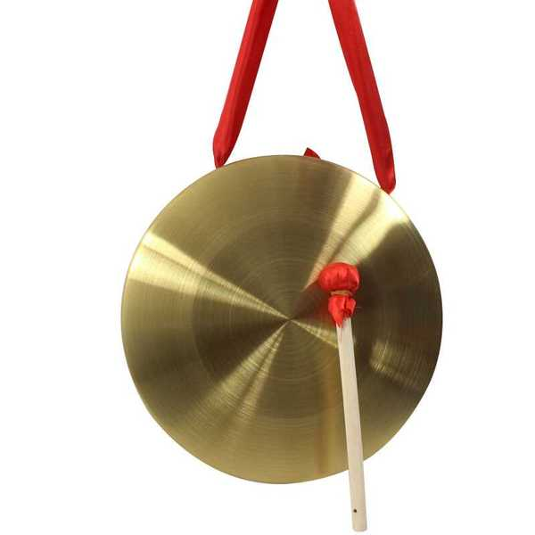

川剧乐器小锣

“小锣”也属锣的一种，因锣面较小而得名。铜制，圆形，直径约22厘米，中心部稍凸起，不系绳。演奏时用左手指支定锣内缘，右手持一薄木片敲击发声。它的音色明亮 清脆。小锣在京戏中也称京小锣，它与大锣在京剧中随着表演动作的节奏敲击，起着衬托和加强效果的作用。它在锣鼓曲时，除有时突出其音色特点外，也敲击花点，起着丰富合奏的效果。小锣身为一圆型弧面，多用铜制结构，其四周 以本身边框固定；锣棰为一木棰。锣身大小有多种规格，小型锣在演奏时用左手提锣身，右手拿棰击锣；大型锣则须悬挂于锣架上演奏。
乐器特色：属于金属体鸣乐器，无固定音高。其音响低沉、宏亮而强烈，余音悠长持久。通常，锣声用于 表现一种紧张的气氛和不祥的预兆，具有十分 独特的艺术效果。锣又称“中国锣”，来自中国的民族乐队，是交响乐队中唯一的中国乐器。锣是现代交响乐队、管弦乐队中重要的打击乐器，改变锣棰棰头的结构或质地可有效地改变锣身的音色。另外，一些较小的锣有确定的音高。